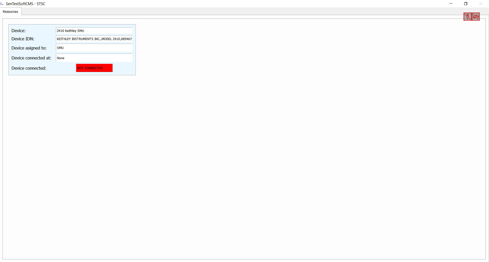

Tutorials¶
This tutorials should guide you through the process of generating your own customized GUI and measurement software.
But before we can start with the fun part, delete all previous existing GUI elements and so on.
To do that delete the content of the following folders, except for the __init__.py files.
- .init/devices
- .init/defaults
- .init/Pad_files
- .modules/QT_Designer_UI
- .modules/ui_plugins
this makes a tabula rasa for your project
the first thing we need now is a complete new defaults.json file, which is needed from the program in order to work
I have set up one for you here, you can simply copy it
{
"Settings_name": "Defaults",
"measurement_types": [],
"measurement_order": [],
"update_counter": 0,
"GUI_render_order": []
}
This file needs to be saved in .init/defaults and it is written in json.
When you now try to run the program via
python UniDAQ.py
you should get an empty GUI window with nothing in it.
This is the start point for the rest of these tutorials
How to add a new GUI element¶
Since our program has now no GUI at all, we first change that in order to see a progress when we add new devices in the next chapter.
UniDAQ can work with QTDesigner .ui files.
With the Installation of this software, which you have followed I hope, the so-called QtDesigner was installed as well.
If features a simple GUI based program, in which you can generate your own GUI and save them in .ui format.
You know can build your own GUI, or you use one of mine. Now I will use the Device_connection_info.ui file from the repository.
It contains a GUI which dynamically shows all connected devices to UniDAQ
Put the file in: .modules/QT_Designer_UI
Next we have to tell the Program to render this UI and in which order (when you have more than one UI). Open the **defaults.json**
file from before and add in “GUI_render_order” the list entry “Resources”.
Know we have to write some code, that the this UI has some logic. For this we generate a file in the folder .modules/ui_plugins.
This file we call Resources_window.py.
The minimal example to run just the GUI without anything else is as follows:
from PyQt5 import QtGui
from PyQt5.QtGui import *
from PyQt5.QtWidgets import *
from .. import utilities
# Logger and utilities
l = logging.getLogger(__name__)
hf = utilities.help_functions()
class <GUI_name>_window:
def __init__(self, GUI_classes, layout):
self.variables = GUI_classes # Containing all variables and methods from the parent class for example the state machine
self.layout = layout # The layout class in which will be rendered
# Loading the UI plugin
<GUI_name>_widget = QWidget()
self.<GUI_name> = self.variables.load_QtUi_file("./modules/QT_Designer_UI/<name_of_ui_file.ui>", <GUI_name>_widget)
self.layout.addWidget(<GUI_name>_widget)
In our case <GUI_name> would be Resources and <name_of_ui_file.ui> would be Device_connection_info.ui.
After that it renders the GUI when you restart UniDAQ. But this code does not have and logic to it. You can add python
member functions to it and access the ui classes e.g. buttons and so on via <GUI_name>.foo() etc.
For simplicity use the file Resources_window.py from the repo and save it to the folder .modules/ui_plugins.
Note
If you look at the code, you will see, that I did not complie to the code example above, on how to implement a new GUI element. This is due to some additional logic I have implemented. Go and check it out how it works!
If you restart UniDAQ you should see … nothing except for a little window tab called “Resources”. Wow, what an achievement! To change this nothingness, proceed to the next chapter and learn how to add a decvice.
How to add a new device¶
Now that we have a GUI which can display all devices in the framework, we should add a device and see what happens.
To do that go into the folder .init/devices and create a .json file. The name of this file has no particular important
meening in the framework. But to keep it all simples lets choose the name like whats the device called e.g. Keithley2410.json.
In this file need the following entries, where the values of the key,value pairs is one of your choosing but the key is fixed:
{
"Device_name": "2410 Keithley SMU",
"Device_type": "SMU",
"Display_name": "SMU1",
"Device_IDN": "KEITHLEY INSTRUMENTS INC.,MODEL 2410,0854671,C33 Mar 31 2015 09:32:39/A02 /J/H"
}
All other entries are your choosing, key and value. You only have to remember them later on for the measurements.
- Device_name: Is a name you can give the Device for internal Display
- Device_type: Specifies the decvice
- Display_name: Is the name for internal reference (only value which has to be different for all devices)
- Device_IDN: Specifies the devices own IDN
UniDAQ has the feature to run an initialization proceedure over all devices, when the software boots up. In order to use this feature a format has to be considered for the keys in the dictionary.
If a key has the prefix default_ it will be executed during initialization. If the additional prefix imp: is stated
then this command will be executed before all other commands. Each default_ needs to have a set_ value to work (but not the other way round).
Out of both a command will be build.
Lets see an example to clarify. Imagine you want to initialize the instrument with voltage 0:
{
"set_voltage": "SOUR:VOLT:LEV ",
"default_voltage": "0"
}
The command which will be send to the device will be SOUR:VOLT:LEV 0.
Note
If you add the item "<alias_name>": "<Display_name>" to your defaults.json file you can rename the device internally, think of it like a internal, consistent notation.
Now that you have added all crucial commands for a device save it and restart UniDAQ, the result should look like
In a very short time we have achieved alot, woudn’ ya say? You now can add as many GUI elements and devices as you want and also add the logic to it.
I would recommend to keep the code you have written now. It may come handy to know what and how many devices are definde/connected to the framework.
Furthermore, I would recommend to add further GUI elements from the repo, especially the “Data_Browser” will come in handy. With it you can browse all json files (and more) you have just created. Furthermore, you can manipulate, add and save the data easily.
How to add a new measurement¶
In this final tutorial I will show you how to add a measurement plugin as easily as the GUI plugins from the previous section. In order to not program a full GUI, please add the GUI elements Main_window.py and Settings_window.py as well as their UI files from the repo.
First you need to implement a “Project”, this can be done if you open a new directory in .init/Pad_files, where
the directory name resembles a “Project”.
Padfile missing
In order for them to work you have to add a few items into the defaults.json file, so please add
{
"Operator": ["Your name"],
"strip_scan_time": 10,
"IVCV_time": 10
}
With this you should be able to start UniDAQ again.
Warning
Since we have only a fracture of the original progam loaded, the program can experience some instabilities and crashes. Especially all table controls are susceptiple! So do not touch them, yet.